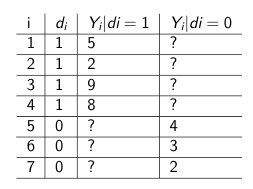
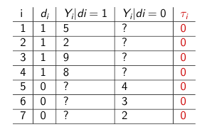
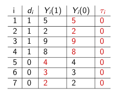
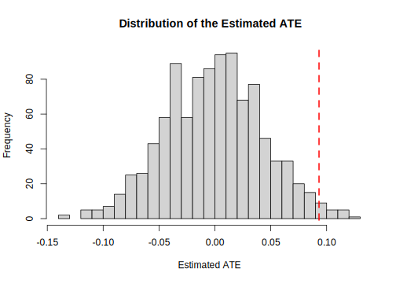

4.5 Randomization Inference
Null Hypothesis of No Average Effect vs. Sharp Null Hypothesis of No Effect (pg. 62)
- \(\mu_{Y(1)} = \mu_{Y(0)}\) vs.
- \(Y_i(1) = Y_i(0)\) for all i
What are the key differences here?
- The treatment has no effect: \(Y_i(1) = Y_i(0)\) for all \(i\).
- Suppose we are in the world where the sharp null is true.
- Let’s simulate what the sampling distribution under that null distribution looks like.
- We assess the distribution relative to the ATE we observe under the assignment in our sample
- How likely is it we would observe our ATE, given the null distribution?
Example Here is our data for 7 observations, where 4 are assigned to treatment, 3 to control.

Our estimate for the average treatment effect is \(6-3 = 3.\)
Suppose the sharp null is true: \(Y_i(1) = Y_i(0)\). This means \(\tau_i\) = 0 for all \(i.\)

In our null world, if we know \(Y_i\) for each \(i\) and \(\tau_i\) for each \(i\), we can solve for the missing potential outcome.

For randomization inference, what we do now is simulate possible randomizations– what if a different set of observations were treated each time?

What is our average treatment effect for d? 18/4 - 15/3 = -.5
Repeat for all (or a lot of) possible permutations of d. This gives us an implied null distribution of the average treatment effect under the sharp null. Note: it won’t always be zero. It will be a distribution around zero. We will compare how extreme our observed estimate of the average treatment effect is compared to this distribution under the null.
Empirical example with social exclusion experiment
Alex Coppock has updated the randomization inference package to ri2 in R. More on this package is available here.
## install.packages("ri2", dependencies=T)
library(ri2)
## Declare randomization
declaration <- declare_ra(N=nrow(asians), prob=.5)
## Estimate the average treatment effect
set.seed(1215)
ri2_out <- conduct_ri(
formula = study2_avg ~ treatment_cit,
assignment = "treatment_cit",
declaration = declaration,
sharp_hypothesis = 0,
data = asians
)Plot and compare distribution to observed ATE
plot(ri2_out)
Summarize Output
summary(ri2_out)## term estimate two_tailed_p_value
## 1 treatment_cit 0.09317187 0.033We can manually see what the package is doing by counting how many of the simulated estimates from the empirical distribution of the sharp null hypothesis were more extreme than our estimate from the study. Note that in this case, our p-value is very similar to the t-test.
estimate <- tidy(ri2_out)$estimate
nsims <- length(ri2_out$sims_df$est_sim)
simstimates <- ri2_out$sims_df$est_sim
## Two-tailed p-value
length(simstimates[abs(simstimates) >= abs(estimate)])/nsims## [1] 0.033